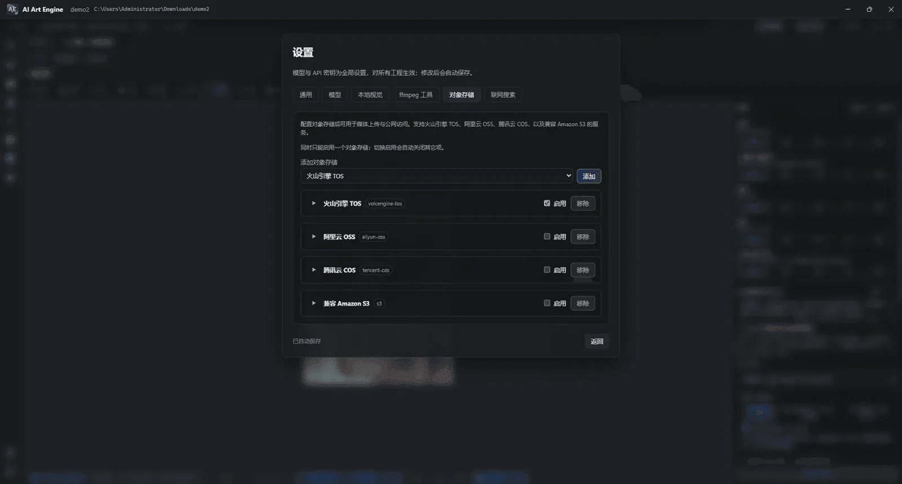

Guide · v8.9.1 · Video Generation, Forensic Remake & Timeline NLE
AI 视频生成、两节点拉片 1:1 复刻与多轨剪辑教程
从新建「自由画布」搭建文生/图生/参考视频链路、利用 3D 导演台离屏 .webm 轨迹白盒视频（@2）精准控镜，到使用内置旗舰工作流
builtin.video-breakdown-remake（semantic.analyze → semantic.rebuild）执行四轴视听全息拉片与 1:1 爆款视频复刻，最后接入剪映级 6 抽屉 output.timeline 导出成片与剪映/CapCut 多轨草稿。
1. 准备
- 模型：设置 → 模型 → 添加并启用提供商（如火山方舟、可灵、MiniMax、OpenRouter 等）→ 在视频页签勾选要用的模型，并设好默认视频模型；若要运行两节点爆款视频复刻，建议同时配好默认多模态文本模型、图片模型与可选语音合成（TTS）模型。
-
对象存储（使用参考视频时必配）：设置 → 对象存储 → 添加火山 TOS / 阿里云 OSS /
腾讯云 COS / 兼容 Amazon S3 之一并启用。本地参考视频（含 3D 导演台导出的
.webm运镜轨迹参考）会先上传为公网可访问 URL（私有桶一般为签名链接），模型才能拉取。 - 确认提供商账户有余额；余额不足时提交会直接失败（例如 MiniMax
1008）。

只做「纯文生视频」、不接本地参考视频时，可以暂不配对象存储。一旦把工程内视频或导入视频连到视频口，就需要已启用的对象存储。
2. 新建自由画布
- 打开工程后，在工作台工具栏或资产库中新建自由画布。
- 若已有「自由画布」，再次新建会得到「自由画布 2」「自由画布 3」……名称仅作资产库区分；你也可以在资产库里改资产名。
- 双击该自由画布资产，进入空白节点图（宿主内图）。
在画布上改节点标题，只会改当前图上的显示名，不会改资产库里的原名。改库内原名请在资产浏览器中操作。
3. 搭一条最小视频链路
在自由画布节点图空白处右键（或按空格打开菜单），按下面顺序添加并连线：
- 添加视频生成节点（加工节点）。在节点下方或 Inspector 中选择视频模型，填写生成指令（提示词）。
- （可选）添加文本 / 备注，或上游「提示词优化」，把文本口连到视频生成的 Text 输入口。
- （可选）添加选取视频，或从资产库拖入视频资产作为宿主/引用节点，把视频输出口连到视频生成的 Video 输入口（参考视频）。
- （可选）用图片节点或资产连到图片 / 首帧 / 尾帧口（视模型与帧模式而定，见下一节）。
- 添加视频输出或成片时间线（
output.timeline）节点，把视频生成的输出接到输出节点，便于预览与导出。
示意（文生 + 参考视频）：
[文本 / 指令] ──► [视频生成] ──► [视频输出 / output.timeline]
▲
[选取视频 / 3D 导演台运镜视频] ─┘ （Video 口 = 参考视频）
4. 参考视频怎么接（含 3D 导演台离屏 .webm 运镜白盒 @2）
视频生成节点的 Video 输入口用于「参考视频」：模型可借鉴运动、运镜、人物动作或场景节奏（具体能力因提供商与模型而异）。
-
来源：资产库导入的视频、选取视频节点、上游已生成的视频，或3D 导演台（
.dstage/director.stage3d）离屏渲染导出的轨迹白盒视频。 -
3D 导演台离屏
.webm轨迹白盒控镜（@2）：在 3D 导演台中摆好角色/道具站位并编辑 Cinemachine 机位关键帧后，节点会在后台离屏渲染输出关键帧锚点图（@1）与精确运镜轨迹白盒视频.webm（@2）。将二者同时连入支持多模态参考的视频生成节点，并在提示词中写明「保持@1人物场景外观，严格跟随@2的镜头推拉摇移轨迹」，即可实现工业级精确控镜。 - 上传与清理：执行时若参考仍是本地路径 / data URL，程序会经当前启用的对象存储自动上传签名 URL 交给模型 API；任务结束后临时上传对象会自动尝试清理。
- 多参考：Video 口支持多连线时，可同时挂多段参考（以模型实际支持为准）。
对象存储的 Endpoint 请使用控制台提供的完整地址（可带
https://）。应用会正确处理协议；若曾出现
ENOTFOUND …https 一类错误，请升级到含 TOS 预签名修复的版本后重试。
5. 首尾帧与指令
-
在视频生成节点参数中选择帧模式：
- 无：不强制首尾帧（纯文生或仅参考视频/图）。
- 首帧：出现首帧图片口，适合图生视频、定格开场。
- 首尾帧：同时约束开头与结尾画面（需模型支持，如部分 Hailuo / 可灵 / Seedance 能力）。
-
指令里可用
@（如@1、@2）引用已连接的上游图片与参考视频，精准描述主体外观、运镜轨迹与动作节奏。 - 时长、分辨率、是否生成音频等选项取决于当前模型能力目录；不支持的选项会被忽略或禁用。
- 逐帧拉片：把上游视频接到「逐帧拉片」节点，双击打开拉片台，在关键帧胶片条上逐帧浏览、 取图并批注；取出的帧可连到下游生成节点作参考。
- 片段重拍：把源视频接到「片段重拍」节点，双击打开重拍台，标记要修改的起止时间并填写修改要求 （如「把雨伞改成透明」）；运行后仅重拍该区间（时间戳级局部编辑），其余片段保持不变。
6. 两节点全息拉片拆解与 1:1 爆款视频复刻（semantic.analyze → semantic.rebuild）
想把任意一条实拍口播、带货种草、剧情混剪或漫剧爆款视频按原片分镜节奏、运镜、BGM 卡点与台词结构 1:1 复刻（同时替换成你自己的数字人角色、商品图或全新美术画风）？v8.9.1 核心内置了开箱即用的旗舰预设 builtin.video-breakdown-remake（rea-video 视频拆解复刻），仅用两颗一等公民节点直连闭环：
[源视频 (in-video)] ──► [🧭 视频拆解 semantic.analyze] ──(SemanticTimeline aiart.semantic-timeline@1)──► [🎬 视频重制 semantic.rebuild] ──► [out-video 复刻成片 + compare.mp4]
▲ ▲
[替换主体/商品参考图 (in-images, @图片1..k)] ────────────────────────────────────────────────────────────────────┘
-
四轴视听法医级拆解（4-Axis Audio-Visual Forensics，
semantic.analyze）：- 语音词级对齐轨（WhisperX）：本地提取逐词精确时间戳（Word-Level Timestamps）与说话人分段，为口型对齐和卡点花字提供毫秒级基准。
- 视觉切镜轨（PySceneDetect）+ 3 帧 VLM 运镜取证：精准定位每个硬切与转场边界，并对每一镜抽取首 / 中 / 尾 3 帧交由多模态 VLM 逆向解析景别、机位角度、镜头运动方向、光影色调与人物动作。
- 音乐节拍轨（Librosa）与音轨分离轨（Demucs）：自动测算全片 BPM 与鼓点重拍（Beats），同时利用 Demucs 将原片无损分离为纯净 BGM/环境音伴奏轨（Stems）与干声人声轨。
- 全部多模态证据统一编码为类型安全的
SemanticTimeline（aiart.semantic-timeline@1） 文档输出，双击节点即可在可视化拉片面板中审阅修订。
- 去字幕纯净背景锚点提取（Clean-Plate Background Anchor Extraction）： 自动识别并擦除原片底部硬字幕、花字贴纸与角标遮挡，还原干净的场景锚点底板，彻底杜绝复刻画面中出现乱码残影文字。
-
动态规划镜头拼批、口型同步与动态
.ass字幕（semantic.rebuild）：- 动态规划拼批（DP Shot Batching）：针对高频快剪短镜头，使用动态规划算法智能聚合相邻微镜头以最优匹配目标视频模型的时长档位，大幅降低生成成本并提升连贯性。
- 主体替换、口型同步（Lip-Sync）与动态字幕：连入
in-images的新角色或商品图（@图片1..k）会自动替换原片主体，配合新配音口型同步、分离出的原声 BGM 混音，以及自动渲染的动态卡点.ass样式字幕一键合成为复刻正片（out-video）。
-
左右同屏帧级对比视频（Side-by-Side
compare.mp4）： 任务完成时除输出纯净复刻成片外，还会自动生成左原片、右复刻成片严格时间轴同步的compare.mp4，一眼检验每一拍切镜、运镜与卡点还原精度。
7. 执行、6 抽屉成片时间线（output.timeline）与剪映草稿导出
- 选中视频生成、
semantic.rebuild或输出节点 → 工具条「执行」，或按住 C 打开执行环；多条链路共用的上游只会 cook 一次。 -
剪映级 6 抽屉多轨时间线（
output.timeline）：将生成的各镜视频、TTS 配音与音乐连入或拖入成片时间线（output.timeline），双击展开专业非线性编辑工作台：- 内置 6 大创意资产抽屉：素材（Media）、特效（Effects）、转场（Transitions）、滤镜（Filters）、调节（Adjust）、模板（Templates），提供 120+ 视觉特效、无缝转场与电影级调色 LUT，并支持 DOTween 曲线双层关键帧动画。
- 双通道无损交付：既可直接渲染导出高码率
.mp4成品视频，也可一键导出 剪映专业版（JianyingPro）/ CapCut 多轨工程草稿（完整保留独立视频轨、音频轨、字幕轨与时间轴切点），无缝衔接后期团队精剪。

output.timeline）：支持 120+ 特效/转场/LUT、DOTween 双层关键帧，以及一键导出 MP4 或剪映专业版 / CapCut 多轨草稿。8. 常见问题
| 现象 | 处理 |
|---|---|
| 提示未配置对象存储 | 设置 → 对象存储中启用 TOS / OSS / COS / 兼容 Amazon S3 之一，并填好密钥与桶。S3 填法见 Yandex Object Storage 示例。 |
insufficient balance (1008) |
提供商账户余额不足，去对应控制台充值（不是 API Key 填错）。 |
| 如何快速创建两节点拉片复刻图？ | 在新建一键工作流中直接选择核心内置预设 builtin.video-breakdown-remake（视频拆解复刻），或在自由画布右键添加 视频拆解 (semantic.analyze) 连向 视频重制 (semantic.rebuild)。 |
| 改了节点名，资产库名字也变了 | 新版本画布改名不再改资产原名；请更新客户端。改库内名请用资产浏览器。 |
| 有参考视频但不生效 | 确认已连到 Video 口、模型支持视频参考，并查看运行日志中的上传摘要。 |
完整界面说明见 使用手册；模型与对象存储细节见手册第 4 章。